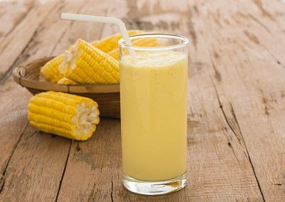

La qualité, une marque
JJR est une entreprise, une marque portée par un groupe de 3 personnes qui ont chacun le souci de servir le pays, la communauté tout en soutenant à leur moyen la production nationale. Notre désir est de veiller au bonne marche de nos projets en soulignant ce qui est pour nous une boussole: La Qualité. Sans se préoccuper obligatoirement des aléas de notre environnement et de les calculer, à JJR, nous nous efforçons de tout mettre en œuvre pour produire des produits de qualités qu’il s’agit de l’Akasan ou du Chocolat.
JJR a actuellement deux (2) principaux produits dans son cursus. L’Akasan issu du maïs pays (en grain) et le Chocolat issu du Cacao haitien. Nous achetons régulièrement ces produits dans les marchés publics de notre environnement et aussi nous les achetons dans les marchés publics dans d’autres départements dont la Grand’Anse. Nous veillons à ce que les produits soient conservés en état pour la qualité et le gout. Nous nous focalisons donc sur le gout et la qualité pour satisfaire nos clients qui sont très exigeants (nos clients réguliers).
Dès sa conception, JJR s’est donné lui-même le challenge de l’excellence afin de nous booster à nous surpasser en termes de travail et de l’engagement. Ainsi la subdivision de JJR avec ses deux filières JJR CHOCOPAM et le JJR AKASAN nous fait de travailler sur chaque produits pour porter dans la cuisine de notre clientèle le meilleur de tous. JJR, La Qualité, Une Marque… Vive la Clientèle, Vive l’excellence, Vive le Goût.